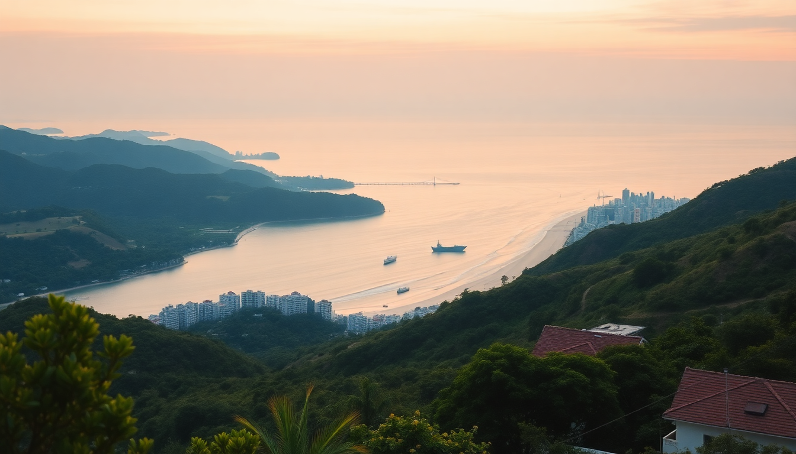

Best Beaches in Vietnam: Da Nang, Nha Trang, Phu Quoc Guide

I spent six weeks hopping between Vietnam’s three most famous beach hubs, and the differences surprised me. Da Nang is the city-meets-surf spot, Nha Trang is the party strip with decent snorkeling, and Phu Quoc is the laid-back island escape. Each has its own trade-offs. Here’s what I found.
Which beach destination is best for swimming and water quality?
Da Nang’s My Khe Beach (the one Americans called China Beach) has long, flat waves that roll in consistently. The water is clean enough, but after a rainstorm you’ll see brown runoff from the Han River. I swam there five mornings in a row and never felt unsafe, but I did skip the day after a typhoon passed by.
Nha Trang’s main beach is a long crescent of golden sand, but the water near the city center gets murky from boat traffic. I took a day trip to Hon Mun Island for snorkeling instead—the visibility was easily 10 meters. The beach itself is fine for a quick dip, but I wouldn’t call it pristine.
Phu Quoc wins for water clarity hands down. Sao Beach on the southeast coast has calm, turquoise water that stays clear even in the afternoon. Long Beach is more exposed and has stronger currents, but it’s swimmable most days. I spent an afternoon at Bai Thom on the northwest coast and had the entire stretch to myself—water so clear I could see sand dollars from waist-deep.
What are the best beaches in Da Nang?
My Khe is the obvious answer, but it’s not the only game in town.
- My Khe Beach – 20 kilometers of sand, lined with seafood restaurants and budget hotels. The waves are strong enough for boogie boarding but not dangerous. I rented a chair for 50,000 VND ($2) and watched fishermen haul nets at sunrise.
- Non Nuoc Beach – Just south of My Khe, quieter, with fewer vendors. I walked here from the Marble Mountains—good combo for a half-day.
- Bai Rang – A tiny cove hidden behind the Son Tra Peninsula. You need a motorbike to reach it, but the water is glassy and there’s a single family-run shack selling iced coffee. I saw maybe three other people on a Saturday.
- Man Thai Beach – North of the city, near the fishing village. It’s not a swimming beach—too many boats—but the sunset views from the rocks are worth the drive.
Is Nha Trang worth visiting for the beaches alone?
Honestly? Not really. Nha Trang’s city beach is overcrowded with jet skis and banana boats, and the vendors hawking sunglasses every 30 seconds killed the vibe for me. But the surrounding islands make up for it.
- Tran Phu Beach – The main strip. Fine for a morning walk, but I wouldn’t plan a trip around it. The water is murky and the sand gets packed by 10 AM.
- Bai Dai Beach (Long Beach) – 15 kilometers south of the city. Much better. I spent a full day here at a shack called Sailing Club Nha Trang—cold beer, decent grilled squid, and water clear enough to see my feet.
- Hon Chong – A rocky headland with a small beach at the base. Good for photos, not for swimming. I climbed the rocks and watched the fishing boats come in.
- Island hopping tour – This is where Nha Trang shines. I booked a group boat trip that stopped at Mun Island, Mot Island, and Tam Island. Snorkeling at Mun was the highlight—coral, parrotfish, and a sea turtle.
If you want a beach vacation, skip Nha Trang city and stay at a resort south on Bai Dai. I checked out Six Senses Ninh Van Bay (north of the city, accessible only by boat) and it’s a world apart from the main beach.
What makes Phu Quoc different from the other two?
Phu Quoc is an island, so everything moves slower. The main town, Duong Dong, is small and touristy, but the beaches outside it feel empty. The trade-off is that you need a motorbike or a taxi to get anywhere—there’s no walking to a beach from your hotel unless you’re staying on one.
- Sao Beach – The postcard beach. White sand, turquoise water, and a row of seafood restaurants. I ate grilled squid at Bun Cha Ha Noi (yes, the name is confusing) and it was the best meal I had on the island. Busy by 11 AM, but still worth it.
- Long Beach – Where most resorts are. The sunset is spectacular. I stayed at Mango Bay Resort here—basic bungalows but right on the sand. The water is shallow for 50 meters out, so it’s great for wading.
- Bai Kem – Near the southern tip, accessed through the JW Marriott Phu Quoc property. You can walk through the resort’s lobby to reach it—just act like you belong. I did, and nobody stopped me.
- Bai Thom – Remote, no services, no shade. I drove 40 minutes on a dirt road to get here and saw maybe five people. If you want total isolation, this is it.
When is the best time to visit each beach?
Timing matters more in Vietnam than most places. The monsoon seasons are real.
- Da Nang – Best from February to August. September to November is typhoon season. I was there in October and got three days of rain straight. The waves were too rough to swim.
- Nha Trang – January to September is dry. October to December brings rain and rough seas. I visited in March and had perfect weather—sunny, 28°C, light breeze.
- Phu Quoc – November to March is the dry season. April to October is rainy, but the rain comes in short bursts. I was there in June and got an hour of heavy rain every afternoon, then clear skies. The upside: empty beaches and half-price hotels.
Where should I stay near these beaches?
I tried a few options across budgets. Here’s what worked.
Da Nang:
- The Memory Hostel – Right on My Khe Beach. Dorm bed for $6, private room for $20. Clean, friendly, and they rent motorbikes.
- Fusion Suites Da Nang Beach – Mid-range with a rooftop infinity pool. I stayed here for three nights and walked to the beach in two minutes.
- InterContinental Danang Sun Peninsula Resort – On the Son Tra Peninsula, away from the city. Over-the-top luxury, but the private beach is incredible.
Nha Trang:
- Sailing Club Nha Trang – On the main beach, but the rooms are set back from the noise. I had a sea-view room for $45 a night.
- Six Senses Ninh Van Bay – Expensive ($400+), but you get a villa on a remote bay with your own plunge pool. Worth it for a splurge.
- Bai Dai Beach bungalows – I found a place called The Anam Cam Ranh south of the city. Private beach, good food, and no jet skis.
Phu Quoc:
- Mango Bay Resort – Rustic, eco-friendly, on Long Beach. No air conditioning in some rooms, but the beachfront bungalows are worth the sweat.
- JW Marriott Phu Quoc – Design hotel on Bai Kem. Over-the-top architecture, but the beach is stunning. I only visited for a drink, but I’d stay if I had the cash.
- Salinda Resort – Mid-range on Long Beach. Pool, spa, and a decent breakfast buffet. I paid $70 a night in June.
FAQ
Is it safe to swim at all these beaches? Generally yes, but pay attention to flags and local advice. Da Nang has strong rip currents after storms. Nha Trang’s main beach is safe during dry season but avoid swimming near the boat channel. Phu Quoc’s Sao Beach is calm year-round. I always ask the lifeguard or a local before going in.
Which beach is best for families with kids? Phu Quoc’s Sao Beach. The water is shallow, the waves are gentle, and there are shaded spots. Da Nang’s My Khe is also good but has stronger waves. Nha Trang’s main beach is too crowded for my liking.
Do I need a motorbike to get around? In Da Nang, yes—the beaches are spread out and taxis add up. In Nha Trang, you can walk the main strip but need wheels for Bai Dai. In Phu Quoc, a motorbike is essential unless you’re staying at a resort that provides shuttles. I rented a Honda Wave for $5 a day in each city.
Conclusion
- Da Nang is the best all-rounder: good swimming, cheap eats, and easy access to the Marble Mountains and Hoi An.
- Nha Trang is for island hopping, not the city beach. Skip the main strip and head south to Bai Dai.
- Phu Quoc is the island escape. Clear water, empty beaches, but you need a motorbike and good timing with the weather.
- Book Da Nang for February–August, Nha Trang for January–September, Phu Quoc for November–March.
- Stay on the beach you want to swim at—don’t rely on walking from the city center in Nha Trang or Da Nang.